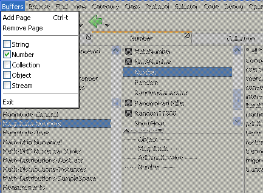
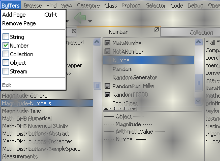
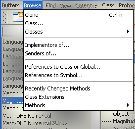
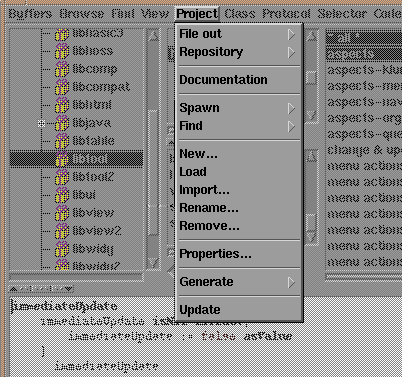
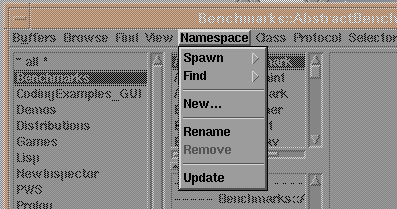
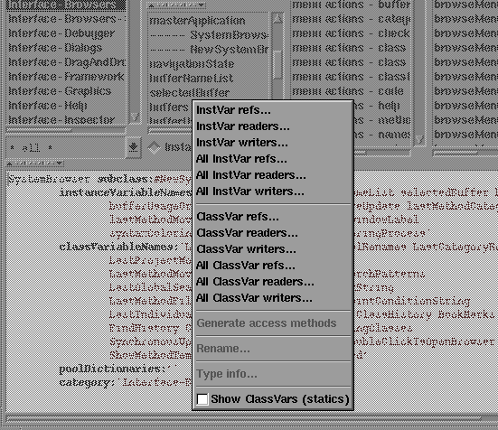

![[prev]](../../../icons/DocsLeftArrow.gif)
![[up]](../../../icons/DocsUpArrow.gif)
![[next]](../../../icons/DocsRightArrow.gif) 

Buffers menu
The funtions of this menu allow for additional buffers (pages/tabs)
(browser-views in the notebook) to be added or removed and to switch to another buffer.
The create/remove functions are also found in the tabs popUp menus.
- Add Page
- Add another Buffer-Page (also called "Tab").
- Remove Page
- Remove the current Buffer-Page.
- Exit
- Close the Browser. A confirmation dialog is opened,
if any buffer has been modified but not saved (i.e. unaccepted modifications).

Browse menu
The funtions of this menu allow for additional browsers
to be either opened as standAlone browsers or to be
added as buffers in the noteBook.
- Class...
- Opens a dialog to ask for the name of a class and shows this class either
in a new browser, a new buffer or the current buffer, depending on which
conformation button was pressed to close the dialog.
The dialog allows for wildcard patterns to be given as name and to select among matching
class names.
- Classes -
- A submenu with common search filters:
- - In Current Changeset
- browse classes which have been changed (but not checked into the source repository).
In contrast to the recently changed function, this will present ALL changed methods.
- - Defining Variable...
- browse classes which define a particular variable.
- - With String in Comment...
- browse classes for which a particular string is found in its comment.
- - With Name Matching...
- browse classes for which the name matches a pattern.
- - All Applications
- browse all application classes (subclasses of ApplicationModel).
- - Which were Autoloaded
- browse all classes which were lazily loaded by the autoload mechanism.
- - Without Examples
- browse all classes which have no examples in the class protocol (for developers/maintenance).
- - Without Documentation
- browse all classes which have no documentation in the class protocol (for developers/maintenance).
- - Without Repository Container
- browse all classes which have not yet been added to the source repository.
- - For Which...
- browse all classes for which a user provided check-block returns true.
- Implementors of...
- browse all methods which implement a particular message selector.
The opened dialog allows for wildcard patterns to be given
and optionally to limit the search area (class, category, etc.).
- Senders of...
- browse all methods which send a particular message selector.
- References to Class or Global...
- browse all methods which refer to a global.
- References to Symbol...
- browse all methods which refer to a symbol.
- Recently Changed Methods...
- browse recently changed methods. This is one of the most useful functions;
however, because there is also a button for this in the toolbar, you will probably not use
this menu item.
- Class Extensions...
- browse all methods which extend a class.
- Methods -
- A submenu with common search filters:
- - In Current Changeset
- browse methods which have been changed (but not checked into the source repository).
In contrast to the recently changed function, this will present ALL changed methods.
- - With String in Comment...
- browse methods for which a particular string is found in its comment.
- - With Window Spec
- browse methods which returns a window specification (i.e. GUI defining methods).
- - With Menu Spec
- browse methods which returns a menu specification (i.e. GUI defining methods).
- - With Image Spec
- browse methods which returns a bitmap image (i.e. typically icons or indicators).
- - With Help Spec
- browse methods which returns a tooltip help text dictionary.
- - With Resource
- browse methods which are marked as resource-providing method ("<resource>"-directive).
- - With Annotation
- browse methods which are marked with an annotation ("<xxx:>"-directive).
- - Without Comment
- browse all methods which have no method comment (an explaining comment at the top of the method).
- - Raises an Exception
- browse all methods which contains exception raising code ("raise:", "raiseRequest:", etc.).
- - Handles an Exception
- browse all methods which contains an exception handler ("handle:do:", "on:do:", etc.).
- - For Which...
- browse all methods for which a user provided check-block returns true.
![[Fig: find menu hardcopy]](../../../pictures/NewSystemBrowserMenuFind.gif)
Find menu (picture is not up-to-date)
The funtions of this menu provide functions to search for classes or
methods and switch the active browsers selection.
![[Fig: ciew menu hardcopy]](../../../pictures/NewSystemBrowserMenuView.gif)
View menu (picture is not up-to-date)
The funtions of this menu allow for the organisation to be switched between a number
of modes (category, namespace, project) and also for various other aspects of the browser to
be set and configured.

Project lists menu (picture is not up-to-date)
This menu is only available after the view-mode has been switched to the ''project''-mode
(-> View Menu).
In this mode, the leftmost view provides a list of all projects (i.e. packages) in the system.
The project list provides the following menu functions:
- FileOut - as
- save all classes in all currently selected
projects into one big source file.
This function is useful to transport a bunch of classes to another Smalltalk system.
The format is supposed to be compatible
to Smalltalk-80's fileOut format.
However, keep in mind, that private classes cannot be loaded into other Smalltalk systems;
classes in a nameSpace might end up as globally visible classes in the other system.
Notice, that this format is a pure interchange format
(in particular, the stc-compiler cannot compile such files,
as it only allows one class-per-file).
The file is created in the current project-directory;
by default, this is the current directory.
- FileOut - XML as
- like above, but files are stored in XML format.
The format is supposed to be readable by newer versions of VisualWorks, especially versions 5 and above.
It may also be useful for the automatic generation of documentation (with the help of an XSLT processor)
or for import into a modelling/design tool, for UML generation.
Notice, that support for the XML format is experimental,
and, that this format is a pure interchange format
(i.e. this format cannot be compiled by the stc-compiler).
- FileOut - SIF as
- like above, but files are stored in SIF format.
The SIF (Smalltalk-Interchange-Format) format is supported by most other Smalltalk dialects,
and readers are available free of charge via the world-wide-web.
Notice, that this format is a pure interchange format
(in particular, this format cannot be compiled by the stc-compiler).
- FileOut - Each in
- save all classes from all selected projects, but put each class into a
separate file, named
"className.st".
Having classes in separate source files is required if the
classes are to be compiled later by stc (for machine code),
or might be required for archival into some source repository.
The files are created in the current projects fileout directory;
by default, this is the current directory.
- FileOut - Each binary in
- like fileOut each, but saves the classes in binary (BOSS - Binary Object Storage) format.
This format is portable across machines, iff no primitive code is contained
OR the target system supports dynamic compilation to machine code.
However, the BOSS format of Smalltalk/X is different from other Smalltalk systems
BOSS format - therefore, those class files cannot be interchanged with non-Smalltalk/X systems.
- Repository - Checkin All
- Check every changed class in the selected project(s) INTO the
source code repository. Unchanged classes do not affect the repository.
Of course, you have to have the sourceCodeManagement facility running for this to work.
- Repository - Checkin Classes Only
- Only check in changed classes from the selected project(s).
You have to have the sourceCodeManagement facility running for this to work.
- Repository - Checkin Extensions Only
- Only check in changed classes from the selected project(s).
You have to have the sourceCodeManagement facility running for this to work.
- Repository - Checkin Build Support Files Only
- Generates the required build-support files as required for stc-compiling and building
shared libraries (.dll / .so) and/or executables (.exe),
and checks those files into the source repository.
The build can then be performed either via a command line shell
("cvs upd" followed by a "make" command), or via the "build" menu function (see below).
The files as generated are:
- "
Make.spec" (unix, win32)
contains the list of object files to be compiled, and common definitions such as include pathes and compiler flags.
- "
Make.proto" (unix)
contains a template, from which unix-dialect specific makefiles are generated.
- "
nt.mak" (win32)
a windows makefile, to be processed by nmake
- "
bmake.bat" (win32)
a shortcut for "nmake -f nt.mak"
- "
libInit.cc" (unix, win32)
generated c-file which lists classes as visible in the generated dll.
- "
<lib>.rc" (win32)
generated resource-file; compiled and added to the dll for some meta information.
- "
abbrev.stc" (unix, win32)
contains class-name to file-name mappings of all classes in the project.
Required by stc, to find include files and used during startup, to setup autoloaded classes.
You have to have the sourceCodeManagement facility running for this to work.
- Build - Binaries
- After asking for a temporary build directory, required files are checked out there from the repository,
and the stc-compiler is invoked to compile the files into a shared-library and/or an executable program.
Notice, that this temporary directory must be distinct from the one in which your current Smalltalk
executes, because source files are overwritten when checking out from the repository.
This could make access to the sourcecode of a class/method impossible in you currently executing browser.
Therefore, the initial dialog insists on a separate directory to be selected.
After the build, depending on the kind of project (i.e. library vs. application), either a shared library object
(.dll/.so) or an executable program is generated in the target work tree.
Notice that the build feature is currently been implemented and in an experimental stage.
It may or may not produce a usable result in your particular situation. It is currently used to manage the
stx-base libraries, stxlib* and a number of applications as generated for exept customers.
- Spawn - Browser
- opens a project browser on the currently selected project(s).
- Spawn - Buffer
- like above, but adds a buffer containing the selected project(s) (i.e. no separate window is opened).
- Find -
- common class/method find menu.
- New
- allows creation of a new project.
- Rename
- rename a project. Be careful - if the sourceCodeManager is enabled, this
requires that the classes be checked in again after the rename operation.
- Remove
- remove all classes (& subclasses) in all selected projects.
You will be warned by a popup box which has
to be answered positively, for the deletion to be actually performed.
- Update
- rescan all classes in the system and update the project list.
Normally, the systemBrowser tries to keep track of changes done by
other parts of the system; however, there are situations, in which the browser
does not get notified of these changes and needs a manual update
(if some program created a class without sending change notifications by using low-level
functions).

NameSpace lists menu (picture is not up-to-date)
This menu is only available after the view-mode has been switched to the ''NameSpace''-mode
(-> View Menu).
In this mode, the leftmost view provides a list of all NameSpaces in the system.
Notice, that a Namespace's purpose is to avoid class-naming conflicts;
it should not be used for project packaging purposes, as a project may include
classes for multiple namespaces.
(however, even if the system does not enforce or otherwise
support this, it is often the case, that projects define and use
their own exclusive namespace for their classes.)
- Spawn - Buffer
- add a buffer which shows the selected namespace(s) only.
- Spawn - Browser
- open a new browser which shows the selected namespace(s) only.
- Find -
- common class/method find menu.
- New
- allows creation of a new namespace.
- Rename
- rename a namespace
- Remove
- will remove the currently selected namespace and all of its
classes. You will get a chance to cancel, if you changed your mind.
- Update
- rescan the system and update the namespace list.
Normally, the systemBrowser tries to keep track of changes done by
other parts of the system; however, there are situations, in which the browser
does not get notified of these changes and needs a manual update
(if some program created a class without sending change notifications by using low-level
functions).

Variable lists menu (picture is not up-to-date)
This menu is not found in the main menuBar, but instead shown as a popUp menu in the variable list view
when the right- (or middle-) button is pressed.
Parts of this menu are also accessible as a submenu under the main class menu.
This menu offers additional functions which apply to the instance- and class-variables of the currently
selected class(es).
- InstVar refs...
- Open another browser or add a buffer showing methods of the selected class, which refer to the given instance variable.
- InstVar readers...
- Open another browser or add a buffer showing methods of the selected class, which read the given instance variable.
- InstVar writers...
- Open another browser or add a buffer showing methods of the selected class, which write (i.e. modify) the given instance variable.
- All InstVar refs...
- Open another browser or add a buffer showing all methods (defining class and all subclasses),
which refer to the given instance variable.
- All InstVar readers...
- Open another browser or add a buffer showing all methods (defining class and all subclasses),
which read the given instance variable.
- All InstVar writers...
- Open another browser or add a buffer showing all methods (defining class and all subclasses),
which write (i.e. modify) the given instance variable.
- ClassVar refs...
- Open another browser or add a buffer showing methods of the selected class, which refer to the given class-variable.
- ClassVar readers...
- Open another browser or add a buffer showing methods of the selected class, which read the given class-variable.
- ClassVar writers...
- Open another browser or add a buffer showing methods of the selected class, which write (i.e. modify) the given class-variable.
- All ClassVar refs...
- Open another browser or add a buffer showing all methods (defining class and all subclasses),
which refer to the given class-variable.
- All ClassVar readers...
- Open another browser or add a buffer showing all methods (defining class and all subclasses),
which read the given class-variable.
- All ClassVar writers...
- Open another browser or add a buffer showing all methods (defining class and all subclasses),
which write (i.e. modify) the given class-variable.
- Generate Access methods...
- Generate accessor methods (getter- and setter-methods) for the selected variable(s).
- Rename
- Rename a variable; also, all methods refering to that variable are changed (rewritten) as required, to
access the new name.
- Type info...
- Scan over all instances of the selected class, and collect class-type information for the selected variable.
- Show ClassVars
- Switches the variable-lists display mode between instance-variable-display and class-variable display.
Next: Code Menu Functions
![[stx logo]](../../../icons/stx.gif) Copyright © 2000 eXept Software AG, all rights reserved
Copyright © 2000 eXept Software AG, all rights reserved
<info@exept.de>
Doc $Revision: 1.21 $ $Date: 2016-09-14 09:41:13 $